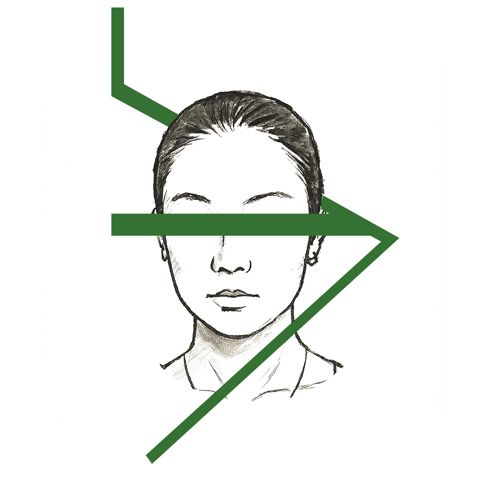

A multidisciplinary designer uniting fashion sensibility with digital design thinking, grounded in HCI, big data visualization, and narrative visualization.
My work also spans fashion design, film production, UI/UX, visual storytelling, and web development.